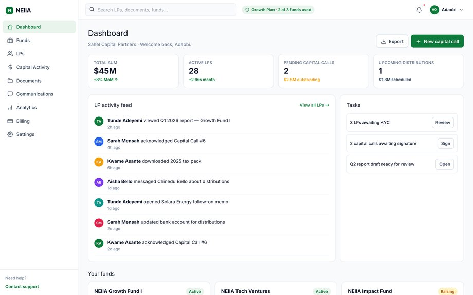
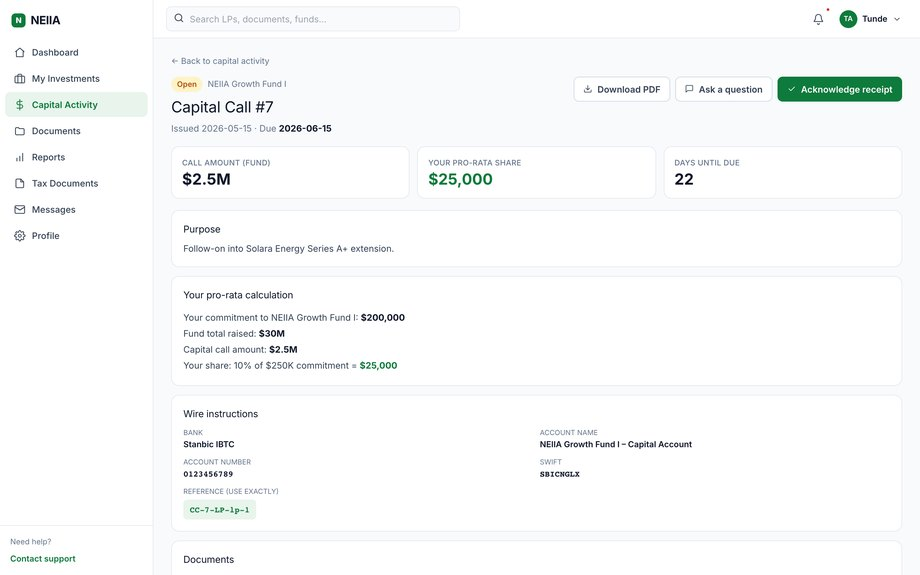
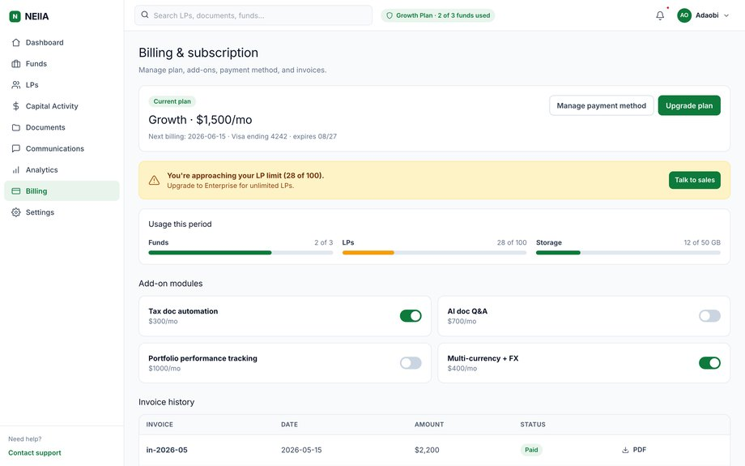
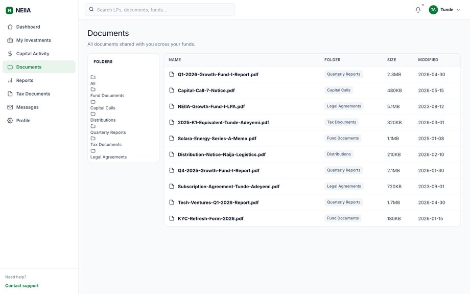
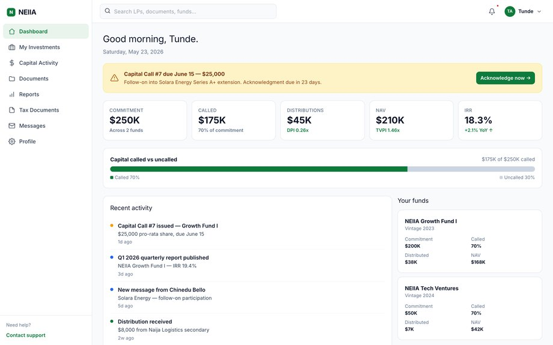

This walkthrough shows the product screens in the order you meet them. For the short written reference, see the help centre guide.
What it is
The LP Portal is the post-raise relationship layer. Once your fund has investors committed in Deal Room, the LP Portal becomes the system of record for the ongoing GP-LP relationship — quarterly reads, capital calls, distributions, K-1s, audited statements, ESG attestations, and the document vault that holds all of it.
It runs in two synchronised camera angles: a GP console where you operate the fund, and a read-only LP view where each investor sees their slice — their commitment, called, NAV, distributions, IRR, and every document filed against their account. Both views read from the same record, so what the GP sees and what the LP sees can never drift.

Who it's for
- GPs / fund managers running one or more vehicles (SPV, Sub-Fund, Rolling, Venture, Co-Invest, Roll-Up) with multiple LPs to serve. The GP console is the operator surface.
- LPs — individuals or institutions holding commitments in one or more funds. LPs get a read-only dashboard with their portfolio across every GP they're committed to.
- Fund administrators — third-party admin shops who run a fund's books on behalf of the GP. Admins get a delegated role that can post calls, file documents, and reconcile NAV, but can't change waterfall logic.
If you're an individual subscribing to one-off deals (not yet committed to a fund), you're in Deal Room, not LP Portal. The LP Portal lights up once a deal you've subscribed to closes inside a fund vehicle, or once a GP invites you as a committed LP.
GP setup
Getting a fund into the LP Portal is a one-time configuration:
- Create the vehicle. From
/reporting-lp/gp/setup, pick the wrapper (SPV, Sub-Fund, Rolling, Venture, Co-Invest, Roll-Up). Each wrapper has a different waterfall template the platform pre-loads. - Define the waterfall. Hurdle, catch-up, carry, GP commitment %. The platform validates against your jurisdiction's standard fund formation framework and flags non-standard provisions.
- Invite LPs. Bulk-upload a CSV of LP emails and commitment sizes, or invite one by one. Each LP gets an email with a sign-up link that pre-fills their commitment.
- LPs accept and sign. Each LP signs the LPA digitally inside the portal. The countersigned LPA files automatically to both the GP's vault and the LP's vault.
- Configure cadence. Quarterly is default. Choose whether calls are scheduled (fixed dates) or just-in-time (issued when needed). Set the distribution waterfall to auto-calculate at every realisation or to require GP approval each time.

Capital calls
The capital call is the workhorse flow. A GP issues a call, every LP receives it, each LP wires within the call window, and the platform reconciles receipts against expected amounts.
- Draft the call. From the GP dashboard, click "New capital call". Enter the total amount, the percentage of remaining commitment it represents, and the reason (deal investment, fund expense, etc.).
- Per-LP allocation. The platform auto-allocates pro rata to each LP's commitment. You can override individual amounts for excused investors (typical for LPs with ESG carve-outs or jurisdiction restrictions).
- Generate notices. The platform produces a personalised PDF notice per LP — their amount, wire instructions to the fund's bank, due date. Notices file to each LP's vault and email.
- Track receipts. As wires land, the platform matches by reference and marks each LP "Funded". Outstanding LPs show on a watchlist with days-until-due and a one-click reminder button.
- Close the call. Once all LPs have funded (or you've decided to proceed with partial), click "Close call". The platform writes the call to the fund's history and updates each LP's called-to-date balance.

Distributions
Distributions run the call mechanics in reverse. A realisation event credits the fund; the platform applies the waterfall; per-LP amounts are calculated; wires go out; receipts confirm.
- Log the realisation. Sale, dividend, coupon, or interest payment — book the gross amount into the fund.
- Apply waterfall. The platform runs the waterfall you set at fund creation. Return of capital first, then hurdle, then catch-up, then carry split. Every step is shown so you can audit.
- Per-LP calculation. Net amounts per LP after waterfall, tax withholding, and any expense recovery. The breakdown is per-LP visible.
- Approve and send. One-click approval pushes wires through your fund's bank. Each LP receives a distribution notice with the breakdown and tax slip.
- LP acknowledgment. LPs acknowledge receipt inside the portal. Acks file to the audit trail.

Document vault
The vault holds everything that constitutes the LP relationship — LPA, side letters, subscription agreements, call notices, distribution notices, audited statements, K-1s / tax slips, valuation reports, ESG attestations.
Documents file automatically when generated (call notices, dist notices) or manually when uploaded (audited statements, side letters). Every document has:
- Visibility scope — fund-wide, LP-specific, or GP-only.
- Audit log — who created, who viewed, when, from what IP.
- Version history — superseded documents are kept; you can always trace back to what an LP signed.
- Tax tags — Nigerian tax year, Form 941, K-1, or whatever applies. Drives the year-end tax export.

The LP-side view
LPs land on a single-page portfolio at /reporting-lp/lp/dashboard.html. The page is short and intentional:
- Header KPIs — total committed, called, distributed, NAV, net IRR.
- Fund cards — one card per fund you're committed to. Each shows commitment, called, NAV, your IRR, and a button to drill into that fund.
- Activity feed — chronological list of every call, distribution, document filed, ack required.
- Vault link — direct to your slice of the document vault, scoped to documents visible to you.
LPs can't change anything that affects fund accounting. The view is read-only for portfolio data and write-only for acknowledgments, signature requests, and message threads with the GP.

Glossary
- Capital call
- A GP request for committed-but-uncalled capital. Each call has a due date and a per-LP allocation.
- Commitment
- The total amount an LP agrees to fund over the fund's life. Drawn down in calls.
- Distribution
- Capital returned to LPs after a realisation. May be return of capital, profit share, or both.
- DPI
- Distributed-to-paid-in. Realised return ratio — distributions divided by paid-in capital.
- Hurdle
- The minimum IRR LPs receive before the GP's carry kicks in. Typically 8%.
- K-1 / Tax slip
- Annual tax document each LP receives, summarising their share of fund income, gains, and expenses.
- LPA
- Limited Partnership Agreement — the master document governing the fund. Each LP signs it (or the equivalent for non-LP vehicles) on admission.
- NAV
- Net Asset Value. The fund's current valuation, computed at each reporting period.
- RVPI
- Residual-Value-to-paid-in. Unrealised return ratio — current NAV divided by paid-in capital.
- Waterfall
- The set of rules deciding how realised proceeds are split between LPs and the GP. American (deal-by-deal) or European (fund-as-a-whole).
Frequently asked
Can I bring an existing fund onto the platform?
Yes — the GP setup wizard includes a "Migrate existing fund" path. Upload your historical capital calls, distributions, NAVs, and current cap table. The platform reconstructs the per-LP balances and IRRs from history.
How are valuations done?
The GP marks NAV each reporting period. The platform tracks the methodology (mark-to-market, mark-to-model, cost) and the audit trail. For Lane B funds, an FRCN-registered auditor reviews annually; the audit ties the GP's marks to evidence.
What if my LP wants to transfer their commitment to a third party?
LPA-permitting, the platform supports an in-place transfer. The outgoing LP and incoming LP both sign; the GP approves; the platform updates the cap table without re-papering the LPA.
Does the LP Portal integrate with Deal Room?
Yes, natively. If your fund subscribes to deals in Deal Room, each closed subscription becomes a position in your LP Portal fund automatically. Distributions from those underlying deals flow into the fund's cash account and then through your waterfall.
Can LPs see each other?
No, by default. LPs see only their own commitment, balances, and documents. Other LPs are anonymized as "LP #14" etc. The GP can opt to share an LP roster if all LPs consent (rare; typically only for syndicate / co-invest vehicles).